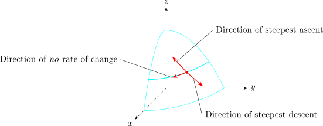

1.4 Maximising the Directional Derivative
Of all the directions in which one can move from a point, in which does \(f\) increase fastest, and how fast? The gradient answers both questions.
Theorem 1.4.1 (Maximising the directional derivative). Let \(f\) be a differentiable function of two or three variables. At any point \(\mathbf x\) the largest value taken by the directional derivative \(D_{\mathbf u}f(\mathbf x)\), as the unit vector \(\mathbf u\) ranges over all directions, is \(|\nabla f(\mathbf x)|\), and if \(\nabla f(\mathbf x)\neq \mathbf 0\) it is attained exactly when \(\mathbf u\) points in the direction of \(\nabla f(\mathbf x)\).
Proof. Write \(\theta \) for the angle between \(\nabla f\) and \(\mathbf u\). Since \(\mathbf u\) is a unit vector, \[D_{\mathbf u} f = \nabla f\cdot \mathbf u = |\nabla f|\,|\mathbf u|\, \cos \theta = |\nabla f|\cos \theta .\] Only \(\cos \theta \) depends on the direction chosen, and \(\cos \theta \) is largest, equal to \(1\), exactly when \(\theta = 0\). Hence the maximum value is \(|\nabla f|\), attained when \(\mathbf u\) is parallel to \(\nabla f\). □
The same one-line calculation settles the other two directions at once, and it is worth reading off all three together:
- \(-\)
- \(\theta = 0\): the derivative is \(+|\nabla f|\). The gradient points in the direction of steepest ascent.
- \(-\)
- \(\theta = \frac {\pi }{2}\): the derivative is \(0\). Perpendicular to the gradient the function does not change to first order — which is exactly why the level curves of \(f\) cross the gradient at right angles.
- \(-\)
- \(\theta = \pi \): the derivative is \(-|\nabla f|\), the direction of steepest descent.
So a single vector, \(\nabla f\), answers three questions: which way is uphill, which way is flat, and how steep the hill is.

Example 1.4.2. Let \(f(x,y) = xe^y\).
- 1.
- Find the rate of change of \(f\) at the point \(P(2,0)\) in the direction from \(P\) to \(Q\left (\frac 12,2\right )\).
- 2.
- In what direction does \(f\) have the maximum rate of change at \(P\)? What is that maximum?
Solution.
- 1.
- \(\nabla f = \langle e^y,\ xe^y\rangle \), so \(\nabla f(2,0) = \langle 1, 2\rangle \). The vector from \(P\) to \(Q\) is \(\overrightarrow {PQ} = \left \langle -\frac 32, 2\right \rangle \), of length \(\frac 52\), so the unit vector is \(\mathbf u = \left \langle -\frac {3}{5},\frac {4}{5}\right \rangle \) and \[D_{\mathbf u} f(2,0) = \langle 1,2\rangle \cdot \left \langle -\frac {3}{5},\frac {4}{5}\right \rangle = -\frac 35 + \frac 85 = 1 .\]
- 2.
- By Theorem 1.4.1, \(f\) increases fastest in the direction of \(\nabla f(2,0) = \langle 1,2\rangle \), and the maximum rate is \(|\langle 1,2\rangle | = \sqrt {5}\approx 2.24\).
Example 1.4.3. Suppose that the temperature at a point \((x,y,z)\) in space is \[T(x,y,z) = \frac {80}{1 + x^2 + 2y^2 + 3z^2},\] where \(T\) is measured in degrees Celsius and \(x,y,z\) in metres. In which direction does the temperature increase fastest at the point \((1,1,-2)\)? What is the maximum rate of increase?
Solution. Writing \(s = 1 + x^2 + 2y^2 + 3z^2\), so that \(T = 80s^{-1}\), \[\nabla T = -\frac {80}{s^2}\nabla s = -\frac {80}{s^2}\langle 2x, 4y, 6z\rangle = \frac {160}{s^2}\langle -x, -2y, -3z\rangle .\] At \((1,1,-2)\), \(s = 1 + 1 + 2 + 12 = 16\), so \[\nabla T (1,1,-2) = \frac {160}{256}\langle -1, -2, 6\rangle = \frac {5}{8}\langle -1,-2,6\rangle .\] The temperature increases fastest in the direction of \(\langle -1,-2,6\rangle \), that is, of the unit vector \(\frac {1}{\sqrt {41}}\langle -1,-2,6\rangle \). The maximum rate of increase is \[|\nabla T(1,1,-2)| = \frac {5}{8}\sqrt {1 + 4 + 36} = \frac {5\sqrt {41}}{8} \approx 4.0\ ^{\circ }\text {C per metre}.\]
Exercise 1.4.4. Find the directional derivative of \(f(x,y,z) = \ln (1 + x^2 + y^2 + z^2)\) at the point \(P(1,-1,1)\) in the direction of the vector \(\mathbf v = \langle 2,-2, -3\rangle \).
Answer: \(\nabla f = \frac {2}{1 + x^2+y^2+z^2}\langle x,y,z\rangle \), so \(\nabla f(1,-1,1) = \frac 12\langle 1,-1,1\rangle \), and with \(\mathbf u = \frac {1}{\sqrt {17}}\langle 2,-2,-3\rangle \), \(D_{\mathbf u}f(P) = \frac {2 + 2 - 3}{2\sqrt {17}} = \frac {1}{2\sqrt {17}}\approx 0.121\).
Example 1.4.5. Show that the gradient is perpendicular to the level curves, and use this to find a normal vector and the tangent line to the ellipse \(x^2 + 4y^2 = 8\) at \((2,1)\).
Solution. Let \(\mathbf r(t) = \langle x(t),y(t)\rangle \) be a curve lying in the level curve \(f(x,y) = k\), so that \(f(x(t),y(t)) = k\) for all \(t\). Differentiating with the chain rule of the subsection on composite functions, \[f_x\,x'(t) + f_y\,y'(t) = 0,\qquad \text {that is}\qquad \nabla f\cdot \mathbf r'(t) = 0 ,\] so \(\nabla f\) is perpendicular to the tangent vector of the level curve.
For \(f(x,y) = x^2 + 4y^2\), \(\nabla f = \langle 2x, 8y\rangle \), which is \(\langle 4,8\rangle \) at \((2,1)\). So \(\langle 1,2\rangle \) is normal to the ellipse there, and the tangent line is \[1\,(x-2) + 2\,(y-1) = 0,\qquad \text {or}\qquad x + 2y = 4 .\]
Example 1.4.6. A heat-seeking particle moves on a metal plate whose temperature is \(T(x,y) = 100 - x^2 - 2y^2\), always in the direction of the gradient. Find its path if it starts at \((2,1)\).
Solution. The velocity is parallel to \(\nabla T = \langle -2x, -4y\rangle \), so along the path \(\frac {dy}{dx} = \frac {-4y}{-2x} = \frac {2y}{x}\). Separating the variables, \(\frac {dy}{y} = \frac {2\,dx}{x}\), so \(\ln |y| = 2\ln |x| + C\) and \(y = cx^2\). The start \((2,1)\) gives \(c = \frac 14\). The particle follows the parabola \(y = \frac {x^2}{4}\) towards the hottest point, the origin, crossing every isotherm \(x^2 + 2y^2 = \text {constant}\) at right angles.
Questions on this section
Stuck on something here? Ask below and it stays attached to this topic.